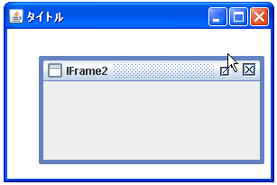

- Home ›
- Swing ›
- JDesktopPaneクラス
最大化、アイコン化、クローズボタンの設置を設定する
インターナルフレームに最大化ボタン、アイコン化ボタン、クローズボタンの設置を設定する方法を確認します。ボタンの設置を設定するにはコンストラクタで指定する方法とメソッドで指定する方法があります。まずはコンストラクタで設定する方法を確認します。
JInternalFrame
public JInternalFrame(String title,
boolean resizable,
boolean closable,
boolean maximizable,
boolean iconifiable)
タイトル、サイズの変更可能性、クローズ可能性、最大化可能性、およびアイ コン化の可能性を指定して、JInternalFrame を作成します。すべての JInternalFrame コンストラクタは、これを使用します。 パラメータ: title - タイトルバーに表示する String resizable - true の場合、内部フレームはサイズ変更できる closable - true の場合、内部フレームはクローズできる maximizable - true の場合、内部フレームは最大化できる iconifiable - true の場合、内部フレームはアイコン化できる
1番目の引数にインターナルフレームのタイトルに表示される文字列をString型の値で指定します。
2番目の引数にインターナルフレームのサイズを変更出来るかどうかを表すboolean型の値を設定します。「true」を設定した場合はサイズの変更が行えます。
3番目の引数にクローズボタンを設置するかどうか表すboolean型の値を設定します。「true」を設定した場合はクローズボタンが設置されます。
4番目の引数に最大化ボタンを設置するかどうか表すboolean型の値を設定します。「true」を設定した場合は最大化ボタンが設置されます。
5番目の引数にアイコン化ボタンを設置するかどうか表すboolean型の値を設定します。「true」を設定した場合はアイコン化が設置されます。
実際の使い方は次のようになります。
JInternalFrame iframe =
new JInternalFrame("title", true, true, true, true);
メソッドで指定する
作成されたJInternalFramクラスのオブジェクトに対してメソッドを使って最大化ボタン、アイコン化ボタン、クローズボタンの設置を設定することも可能です。
まず最大化ボタンを設置するかどうかを設定するにはJInternalFrameクラスで用意されている「setMaximizable」メソッドを使います。
setMaximizable public void setMaximizable(boolean b)
maximizable プロパティーを設定します。このプロパティーは、ユーザーアク
ションによって JInternalFrame を最大化できるかどうかを指定します。内部
フレームの最大化を実装していない Look & Feel もあり、その場合このプロ
パティーは無視されます。
パラメータ:
b - true の場合はこの内部フレームは最大化できるように指定され、false
の場合は最大化できないように指定される
引数に最大化ボタンを設置するかどうかを表すboolean型の値を設定します。「true」を設定した場合は最大化ボタンが設置されます。
次にアイコン化ボタンを設置するかどうかを設定するにはJInternalFrameクラスで用意されている「setIconifiable」メソッドを使います。
setIconifiable public void setIconifiable(boolean b)
iconable プロパティーを設定します。ユーザーが JInternalFrame をアイコン 化できるようにするには true にする必要があります。Look & Feel によって はアイコン化機能が実装されないことがあり、その場合このプロパティーは無 視されます。 パラメータ: b - boolean 値。true の場合は、この内部フレームをアイコン化できる
引数にアイコン化ボタンを設置するかどうかを表すboolean型の値を設定します。「true」を設定した場合はアイコン化ボタンが設置されます。
次にクローズボタンを設置するかどうかを設定するにはJInternalFrameクラスで用意されている「setClosable」メソッドを使います。
setClosable public void setClosable(boolean b)
ユーザーアクションによってこの JInternalFrame を閉じることができるかど うかを設定します。 パラメータ: b - boolean 値。true の場合は、この内部フレームを閉じることができる
引数にクローズボタンを設置するかどうかを表すboolean型の値を設定します。「true」を設定した場合はクローズボタンが設置されます。
実際の使い方は次のようになります。
JInternalFrame iframe = new JInternalFrame(); iframe.setMaximizable(true); iframe.setIconifiable(true); iframe.setClosable(true);
サンプルプログラム
では簡単なサンプルを作成して試してみます。
import javax.swing.*;
import java.awt.BorderLayout;
public class JDesktopPaneTest7 extends JFrame{
public static void main(String[] args){
JDesktopPaneTest7 frame = new JDesktopPaneTest7();
frame.setDefaultCloseOperation(JFrame.EXIT_ON_CLOSE);
frame.setBounds(10, 10, 300, 200);
frame.setTitle("タイトル");
frame.setVisible(true);
}
JDesktopPaneTest7(){
JDesktopPane desktop = new JDesktopPane();
JInternalFrame iframe1 = new JInternalFrame("IFrame1", true,
true, true, true);
iframe1.setSize(250, 120);
iframe1.setLocation(10, 10);
iframe1.setVisible(true);
JInternalFrame iframe2 = new JInternalFrame("IFrame2");
iframe2.setSize(250, 120);
iframe2.setLocation(30, 30);
iframe2.setMaximizable(true);
iframe2.setClosable(true);
iframe2.setVisible(true);
desktop.add(iframe1);
desktop.add(iframe2);
getContentPane().add(desktop, BorderLayout.CENTER);
}
}
上記をコンパイルした後で実行すると次のように表示されます。
子フレームの右上に表示されているのが最大化/アイコン化/クローズボタンです。一番左のボタンがアイコン化ボタンです。

アイコン化ボタンをクリックすると子フレームがアイコン化して表示されます。
真ん中のボタンが最大化ボタンです。
最大化ボタンをクリックすると子フレームが最大化して表示されます。
一番右のボタンがクローズボタンです。
クローズボタンをクリックすると子フレームが閉じられます。

( Written by Tatsuo Ikura )

著者 / TATSUO IKURA
初心者～中級者の方を対象としたプログラミング方法や開発環境の構築の解説を行うサイトの運営を行っています。